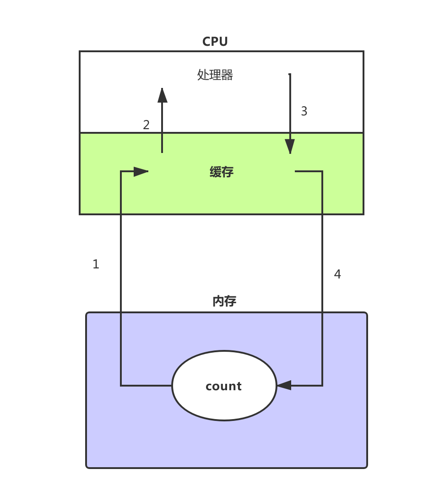
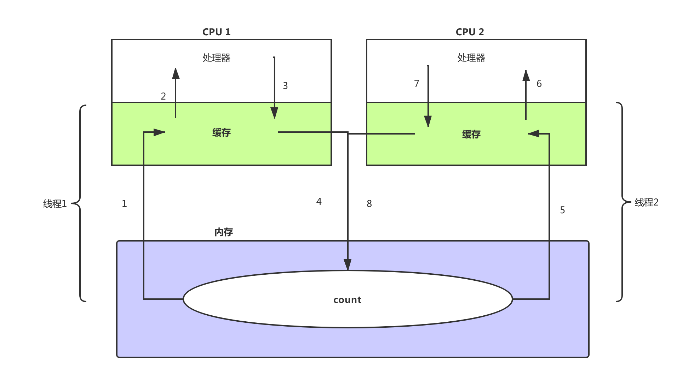

原文连接:https://www.cnblogs.com/kiwifly/p/11930444.html
【并发那些事】可见性问题的万恶之源

硬件工程师为均衡 CPU 与 缓存之间的速度差异，特意加的 CPU 缓存，竟然在多核的场景下阴差阳错的成为了并发可见性问题的万恶之源！(本文过长，如果不是特别无聊，看到这里就可以了)
前言
还记得那些年，你写的那些多线程 BUG 吗？明明只想得到个 1 + 1 = 2 的预期，结果他有时候得到 1，有时候得到 3，但偏偏有时候他也会返回正确的 2。明明在本地运行的好好的，一上线一堆诡异的 BUG。你一遍一遍的检查代码，一行一行 debug，结果无功而返。
变量为何突然变异？代码为何乱序运行？条件为何形同虚设？欢迎收看今天的《走进科学》之半夜。。。哦，不对，欢迎阅读今天的《并发那些事》之可见性问题的万恶之源。就像上面说的，我们在写并发程序时，经常会出现超出我们认识与直觉的问题，而按我们的以往的经验，很难去察觉到他的问题所在。而又因为我们不了解他发生的诱因，即使我们按照书上的方案解决了，但是下次还是会出现。所以本文的主旨并不是解决问题的术，而是解决问题的道。一起来探究多线程问题的根源。
首先揭开谜底，大多数并发问题的发生都是这三个问题导致的，可见性问题、原子性问题、有序性问题。那么又是什么导致这三个问题的出现呢？本文将一步步解析可见性问题出现的原因。
核心矛盾
众所周知，电脑由很多的部件组成。其中最最最重要的有三个，它们分别是 CPU 、内存、IO（硬盘）。一般来说它们三个的性能高低直接影响到了电脑的整体的性能优劣。
但是从它们诞生之初，就有一个核心矛盾，即使过了几十年后的现在，科技的飞速发展依旧没能解决。那么是什么矛盾呢？
在说矛盾之前，先说我个同事，他是个电竞高手，英雄联盟、王者荣耀什么的意识特别历害。每次看比赛的时候那种指点江山、挥斥方遒的英姿闪闪发光。但是呢，一上手打游戏，一顿操作猛如虎，一看战绩0杠5，刚开始我们以为他是个青铜，但是呢，很多时候游戏的真的就像他说的那样，他的预判，他的操作其实都相当的风骚。一直很疑惑，直到我们得出了一个结论，其实他的确是一个王者，因为他满脑子都是骚操作，但是呢？他的双手跟不上他风骚的大脑。
问题就在这里，核心矛盾就是速度的差异。CPU 就像是那位同事的大脑，很强很风骚，但是奈何 IO 就像那双跟不上节奏的手，限制了发挥。而且它们之间的速度差异要远远超出我们的想像，CPU 就好比是火箭，那么内存就是三轮车，IO 可能就是马路旁一只不起眼的小蜗牛。
各方的努力
既然有了这个问题，那就要想办法解决，首先这个问题出在硬件层，所以首当其冲的硬件工作师想了很多方式试图去解决。经过内存跟 IO 硬件工程师的不懈努力，这两个组件的速度都得到了大幅提升。但是呢？CPU 的工程师也没闲着，甚至英特尔的 CEO--高登·摩尔还宣布了一个以自己姓名定义的摩尔定律。其内容大致如下：
集成电路上可容纳的晶体管数目，约每18个月便会增加一倍
可以简单的理解，CPU 每 18 个月性能就能翻一倍。这就让内存跟 IO 的硬件工程师很绝望了，不怕别人比你聪明，就怕比你聪明的人还比你努力。这还是怎么玩？
当然，独木不成林，CPU 工程师也意识到了这个问题，我再怎么独领风骚，以1V5。没有用呀？打的正嗨，一回头，家被推了。我下了一部电影，双击打开，CPU 飞速运行，IO 在缓慢加载。我 CPU 运行到冒烟也没用呀，IO 制约了。结果就是电影变成了 PPT，一秒一停。这样下去大家都没得玩。眼看其它队友带不动，CPU 工程师想出了一个办法，我在 CPU 里面划一块出来做为缓存，这个缓存介于 CPU 与 内存之间，跟我们常用的缓存功能差不多，为了均衡 CPU 与内存之间的速度差，在执行的时候会把数据先从 IO 加载到 内存，再把内存中的数据加载到 CPU 的缓存之中。将常用或者将用的数据缓存在 CPU 中后，CPU 每次处理时就不用老是等内存了，这极大的提高了CPU 的利用率。
到这里，硬件工程师圆满的完成了任务，下面轮到了我们软件工程师登场了。
虽然说加了缓存之后，CPU 的利用率成倍上升，从当初的运行 5 分钟，加载 2 小时。变成了，运行 2 分钟，加载 1 小时，但是体验还是很差。还拿电影举例，看电影的时候不光有画面，还得有声音呀，你运行是快了，但是先放视频，再放声音。就像是先看一部默片，再听一遍广播，这种音画分离的观感没比 PPT 强多少。
后来在软硬工程师的天才努力后，发明了一种神奇的东西--线程。说线程之前我们先说一下进程，这个东西可是我们能看到的东西，比始你启动的浏览器，比如你正在使用的微信，这些软件启动后，在操作系统中都是一个进程。而线程呢？它可以简单理解成是一个进程的子集，也就是说进程其实是一堆线程组成。而且操作系统通常会把所有硬件资源，包括内存之内的全分配给进程，进程就像一个包工头一样再分配给底下的线程。但是唯独有一样资源，操作系统是直接分配给线程的，那就是 CPU 资源。
这样的设置其实是有深意的。可能有人觉得，分给进程也可以呀，但是进程要比线程重的多，切换的开销过大，得不尝试。就像是你想打开一个新的网页，是打开一个新浏览器快呢？还是打开一个新的 Tab 页快呢？总之有了线程之后，我们就有了一个很酷炫的操作--线程切换。他能带来什么呢？接着说电影的事，我们其实还是先播视频再放声音。但是与上面不同的是，我们是先放一会视频，再放一会声音。只要单次播放的够短，两种操作之间的切换够快，就会让人感觉其实视频与声音是同时播的错觉。而轻量的线程以及提供的切换能力给这种操作提供了可能。
至此，问题在无数硬件与软件工程师的努力下，得到了比较完美的解决。
新的问题
事情到了这里，本该皆大欢喜、功德圆满。结果英特尔又出来搞事，但其实他这次也是被逼无奈。
还记得我们上面说的以英特尔 CEO--高登·摩尔命名的摩尔定律吗？这个定律其实并不是根据严谨的科学研究得出来的，而是通过英特尔的过往表现推导出的这个结论。按理说这是极不符合科学规律的，就像我遇到的每个程序员都背个电脑包，但是我在大街上不能随便看到一个背着电脑包的人就说他是程序员。但是英特尔就是这么 NB，他在的大街上全是程序员。英特尔就这样维护着这个定律每 18 个月把 CPU 的性能翻一倍，持续了每多年。
直到第四任 CEO 的时候，摩尔定律突然不灵了，上图就是时任英特尔 CEO--克瑞格·贝瑞特。在一次技术大会上，向与会者下跪。为一再延期直至最终失败放弃的 4GHz 主频奔 4 处理器致歉。
到此，摩尔定律终结，CPU 的发展进入了瓶颈。直到有一天一个脑门闪光的硬件工程师敲响了克瑞格·贝瑞特办公室的大门。"老板你不用跪了，我有个办法可以把 CPU 性能提高一倍"。
一句话让克瑞格老泪纵横，那一天，回想起了，受那些家伙支配的恐怖……被囚禁在鸟笼中的屈辱……
克瑞格激动的问道："什么方案？"
硬件工程师："很简单呀，我们只要把现在两个的 CPU 装到一个大号的 CPU 里面，那么他的性能就是两个 CPU 的性能呀！我可真是一个小机灵鬼呢"
做了一辈子 CPU 的克瑞格，气的差点进了 ICU。"我老克就算跪一辈子，也不会做这种傻事"。
上图为英特尔发布的 28 核 CPU。嗯？
当然上面其实有些戏谑的成分，但是 CPU 的发展结果也的确是往更多的核心数去发展。从单核到双核再 6 核、8核不停的增长核心数，CPU 的性能也的确跟着增长。这其实跟我们软件工程师常用的分布式架构一样，当单机的性能达到了瓶颈，不可能再通过纵向的增加服务器的性能提高系统负载，只能通过把单机系统，拆成多个分布式服务来进行横向的扩展。
通过增加 CPU 的核心数，硬件工程师看似圆满的完成时代交给他的任务。结果一口大锅甩在了咱们软件工程师的头上。
来，我们回顾一下，上面我们说 CPU、内存、IO 他们有一个核心矛盾，这个矛盾就是速度的差异。而且这个差异仍然没有解决。但是我们变相的解决了。解决方案是什么？硬件工程师在 CPU 的核心里划了一块地方做为缓存，通过这个缓存均衡他们之间的差异。而软件工程师呢，为了最大的提高 CPU 的利用率，搞了一个叫线程的东西，通过多线程之间的切换圆满解决问题。
嗯，这个方案很完美，没有问题。但是，前提是运行在单核的 CPU 下。
刚才我们说了 CPU 的核心，会有一块地方缓存从内存里加载的数据，这样就不用每次从内存里加载了，提高了效率。但是呢，单核有一个缓存，多核就会出现多个缓存，再加上我们多线程的运行，会出现什么情况呢？下面我们以真实代码为例子：
public class TestCount {
private int count = 0;
public static void main(String[] args) throws InterruptedException {
TestCount testCount = new TestCount();
Thread threadOne = new Thread(() -> testCount.add());
Thread threadTwo = new Thread(() -> testCount.add());
threadOne.start();
threadTwo.start();
threadOne.join();
threadTwo.join();
System.out.println(testCount.count);
}
public void add() {
for (int i = 0; i < 100000; i++) {
count++;
}
}
}
代码很简单，两个线程都调用一个 add 方法，而这个 add 方法的操作是循环 10 w 次，每次都把这两个线程共享的 count 变量加 1 。按照我们的直觉来说，count 开始是 0，每个线程加 10 w，总共两个线程，所以 10 w * 2 = 20 w。
可是呢？结果并不是我们想的那样，我运行的结果是：113595。而且每次运行的结果都不一样，你可以试试。结果基本上都在 10w ~ 20w 之间，而且无限趋向于 10w。
这是什么鬼？还记得前面说的 CPU 缓存吗？没错，他就是这只鬼。为了便于说明问题，我画了几张图。

上图是在单核的情况下，首先这个 count 会被加载到内存中。这时他是初始值 0。然后如图所示，第 1 步他被加载到了 CPU 的缓存中，CPU 处理器把他从缓存中取出来，然后进行 add 操作，加完之后再放入缓存中，缓存再把 count 写入内存中，最终我们就得到了结果。可见单核情况下，因为共享缓存与内存，没有任何问题，我们接着看多核的情况下。

如上是多核场景下的运算过程，具体步骤如下：
- 首先 count 被加载到内存，紧接着线程1被 CPU 1调用，把内存的 count = 0 加载到了缓存中
- 然后 CPU 1把缓存中 count = 0 加载到处理器中，一个时间片处理后 13595
- CPU 把 count = 13595 存入到缓存，准备下次接着算
- 缓存 把 count = 13595 刷新加内存，等下个时间片再加载
- 线程 2 得到了 CPU2 时间片，从内存中把刚刚线程 1 算了一半的 count = 13595 加载到了缓存
- CPU 2 把 count = 13595 加载到了处理器，开始运算。与些同时 CPU 1把时间片又分配给了线程1，线程接着刚才的 count = 13595 运算，很快算完得到 10 w ，并把结果最终刷进了内存，现在内存中的数据为 count = 10w。
- 线程2也很快运行完了 10w 次，现在他得到的结果 13595 + 10w = 113595。然后同样把结果最终的刷新进了内存，现在内存中的数据为 count = 113595。
看到问题了吗？可以理解缓存中的 count 是内存中的 count 的一份拷贝。在缓存中修改时并不会变更内存中的值，而是过一段时间后刷新回内存，而线程1把计算了一半的值，刷新进内存后，线程2把这个新值加载到了 CPU2中，然后计算。与些同时 CPU 1完成了计算，并把值刷新进了内存，CPU2仍在计算，因为他不知道 CPU1把值改变了，计算完了，把自己计算的值也刷新进了内存中，这样就把刚刚 CPU1 忙乎半天的结果覆盖了。
出现这个问题的根本原因就是，CPU 1与 CPU 2各自的操作对于双方不可见。在这种情况下，运行期间其实总共有 3 个 count 变量，一个是内存中的 count，一个是 CPU1中的 count拷贝，最后一个是 CPU2中的 count 拷贝。
结论
硬件工程师为均衡 CPU 与 缓存之间的速度差异，而特意加的 CPU 缓存，竟然在多核的场景下阴差阳错的成为了并发问题中可见性的根源！
其它
本文是《并发那些事》的第三篇，前两篇如下：